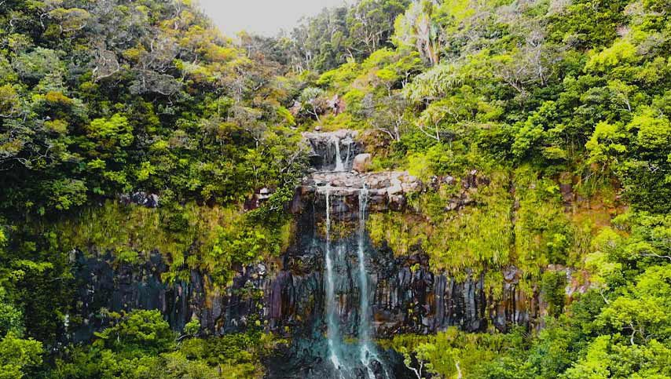
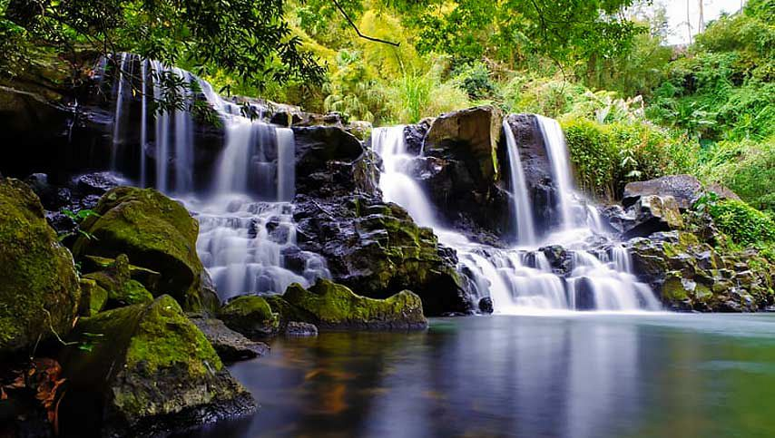

3 best Waterfalls of Mauritius!

Rochester Falls
The iconic Rochester Falls is located in the Savanne district of Mauritius, just some 2.5 kilometers away from Souillac (South of Mauritius). It is also known as the widest waterfall in Mauritius.
more info ...

Alexandra Falls
Situated some 700m above sea level, the Alexandra Falls is one of the most popular nature sites in Mauritius. Located in the Black River Georges National Park, a visit to Mother Nature’s heritage is a must for all.
more info ...

Eureka Falls
Situated near the town of Grand Bay in the northwest of Mauritius, La Cuvette Beach is a small beach as compared to the other beaches in Mauritius, but an extremely beautiful one.
more info ...